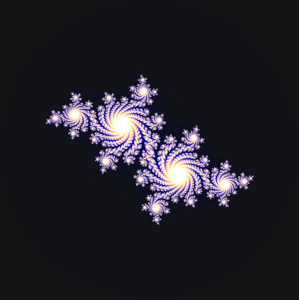
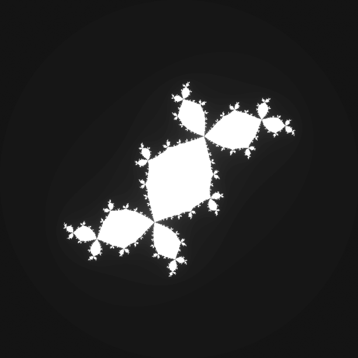

Defining the Julia Set
The Julia Set is a fractal defined by an iterative function, for this example we will be discussing sets generated solely from f(z) = z2 + c. Initialised by a complex number c = x + yi, the recursive function zn+1 = zn2 + c is iterated from z0 being any given point within the respective bounds, while c remains as the predefined constant. After a given number of iterations, if zn does not approach infinity, and remains within the given bounds, z0 exists within the Julia set (our given example uses bounds of x ∈ [-2, 2] and y ∈ [-2, 2]). This iterated process is done for all points z0 for a given resolution within the bounds.
Being represented on the complex-plane, the topological dimension of a Julia Set is 2. For any metric space, the Hausdorff dimension is a measure of roughness, measuring how a set “fills up” as its parameters change. The Hausdorff dimension of a Julia Set J(f), satisfies the conditions 1 ≤ J(f) ≤ 2. An example of the Julia Set with defined Hausdorff Dimension are the Douady Rabbit (DH = 1.3934), one of which is pictured below.
Generating Julia Sets
Using Matplotlib
import numpy as np
import matplotlib.pyplot as plt
from matplotlib.colors import LinearSegmentedColormap
import time
st = time.time()
iterations = 200
resolution = 2000
c = complex(-0.4, -0.59)
real_min, real_max = -2.0, 2.0
imaginary_min, imaginary_max = -2.0, 2.0
x_axis = np.linspace(real_min, real_max, resolution)
imaginary_axis = np.linspace(imaginary_min, imaginary_max, resolution)
x_values, i_values = np.meshgrid(x_axis, imaginary_axis)
julia_set = np.zeros((resolution, resolution), dtype=np.uint16)
def julia(c, iter):
z = x + y * 1j
for n in range(iter):
if abs(z) > 2.0:
return n
z = z*z + c
return iter
colors = LinearSegmentedColormap.from_list('my_cmap', ['#141414', '#000050',
'#0000e3', '#fc6995', '#fff63f', 'white'], N=iterations)
image = np.zeros((resolution, resolution, 3))
for i in range(resolution):
for j in range(resolution):
x, y = x_values[i, j], i_values[i, j]
iteration = julia(c, iterations)
normalized_iteration = iteration / iterations
color = colors(normalized_iteration)
image[i, j] = color[:-1]
plt.figure(figsize=(8, 8))
plt.imshow(image, extent=(real_min, real_max, imaginary_min, imaginary_max))
plt.axis('equal')
plt.axis('off')
et = time.time()
elapsed_time = et - st
print('\nExecution time:', round(elapsed_time, 3), 'seconds')
plt.show()